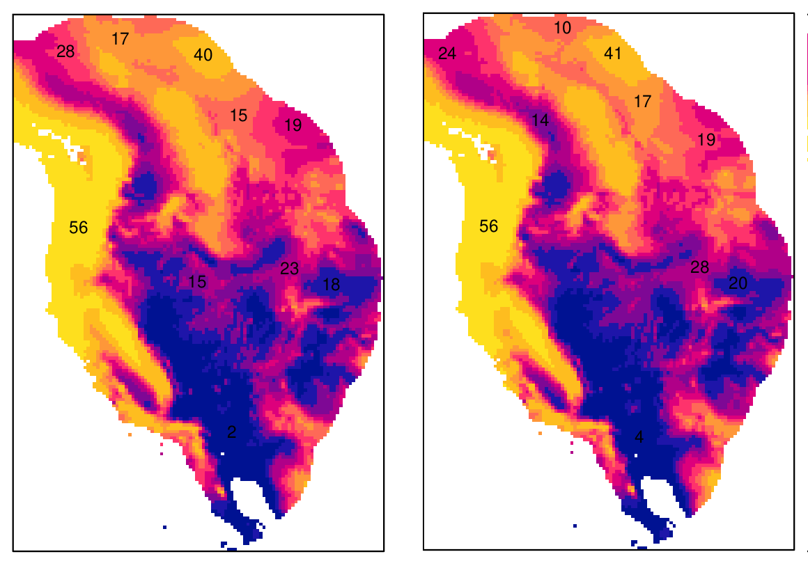
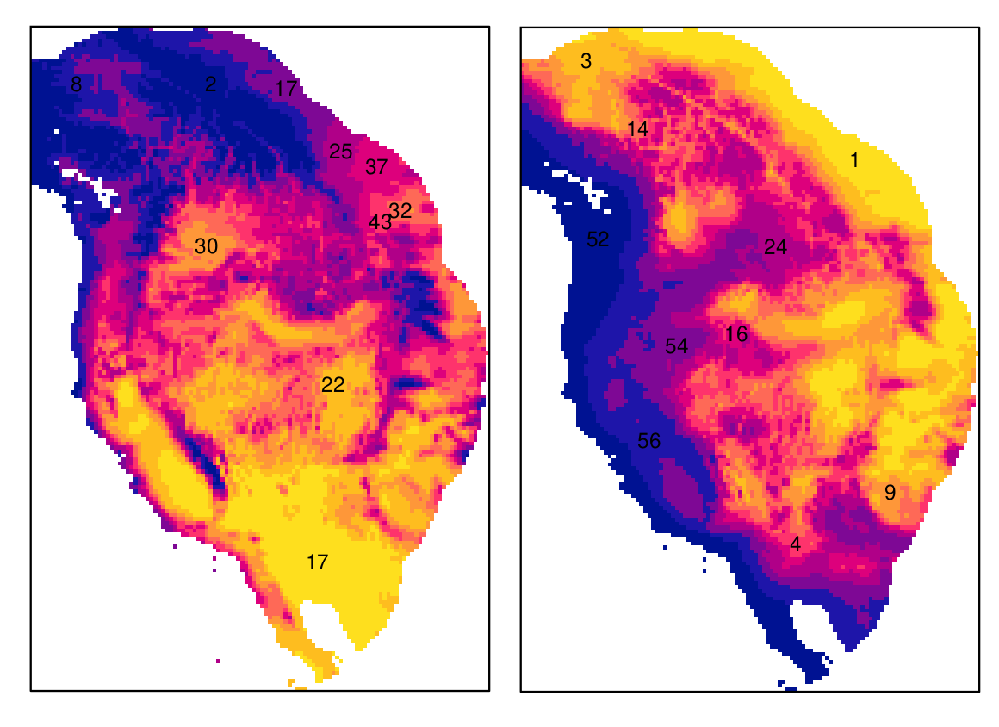

4 Unidad II - Análisis de la asociación espacial entre varios fenómenos
La asociación espacial es el pilar del análisis espacial, y consiste principalmente en medir el grado de dependencia entre dos variables con estructura espacial.
4.1 Correlación y regresión espacial
4.1.1 Correlación espacial
La correlación mide la similitud entre dos variables aleatorias, comparando sus varianzas respectivas. Es una prueba muy sencilla, pero que tiene muchas fallas, por ejemplo, no podemos saber si la correlación es causal. Veamos dos ejemplos de correlación entre dos variables ambientales, uno donde hay una alta correlación y otro donde no la hay.

Figura 4.1: Variables altamente correlacionadas. Los mapas muestran los valores de dos capas ráster, y la gráfica de dispersión contiene los valores de cada píxel, en el eje x, la variable de la izquieda, y el eje y la variable de la derecha.

Figura 4.2: Variables pobremente correlacionadas.
Claramente en el ejemplo de la figura 4.1, una de las variables predice a la otra, pero no sabemos cuál produce a cuál, o si ambas sor producidas por otra variable que no se ha medido. En resumidas cuentas, la correlación no se puede utilizar para analizar causalidad, lo cual es común a todos los análisis estadísticos.
4.1.1.1 Breve recordatorio del cálculo de la correlación
Como ya han de saber, la correlación es una prueba de estadística frecuentista paramétrica. Como tal, consiste en una serie de cáculos aritméticos para obtener un parámetro \(r\):
\[\begin{equation} r = \frac{\sum x_1 x_2}{\sqrt{\sum x_1^2 \sum x_2^2}} \end{equation}\]
donde \(x_1\) y \(x_2\) son las dos variables, cuya correlación queremos medir. Esta prueba de correlación se llama de Pearson, y existen algunas modificaciones para datos de otra naturaleza como los ordinales, para lo cual se utiliza la correlación de Spearman. El coeficiente de correlación de esta última se denota con \(\rho\).
La correlación de Spearman es menos sensible que la de Pearson a correlaciones no lineales, por lo que si la gráfica de las variables \(x_1, x_2\) no forma una línea recta como en 4.1, se puede probar con la correlación de Spearman.